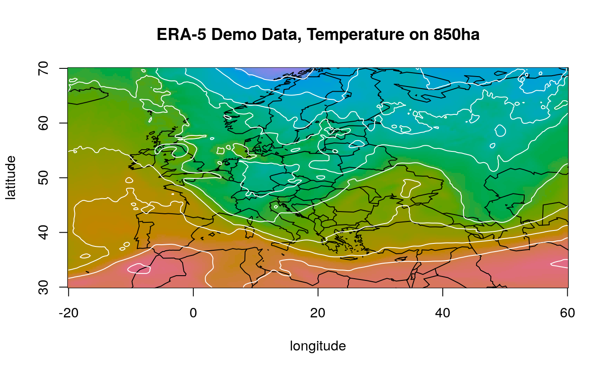
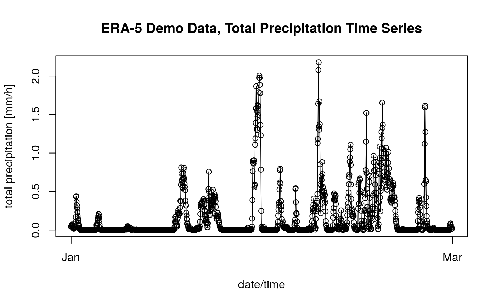

../vignettes/era5_vignette.Rmd
era5_vignette.RmdCopernicus.eu provides a set of interesting data sets for research, education, and applied earth sciences on their Climate Data Store (CDS) servers. Among the different data sets there is the latest ECMWF high-resolution reanalysis data set which replaces ERA Interim (which was ERA-4, version 4).
The R package ecmwfr provides a handy interface to download these data sets. This page provides some examples how to retrieve ERA-5 reanalysis data.
Before you will be able to download any data you need to get a free personal account.
To retrieve data ecmwfr provides two options: use cds_set_key to add the login details to your local keyring, or create a file called .cdsapirc in your user home directory to provide the user login details. More details about the local .cdsapirc file can be found here.
Once you are in possession of your user login details (namely your user ID and a secret key) you can use ecmwfr to send data requests to CDS and/or download data sets. Note that this page will always make use of the .cdsapirc file. Thus, the user input option will always be set to user = NULL. However, feel free to use the cds_set_key() function to add the login details to your local keyring (requires the keyring package to be installed) and provide user = "<your user id>" when calling the cds_request() function (and all othres depending on your user details).
CDS data retreivals are based on a list which defines the data set to be downloaded. These definitions are called requests (for those who are familiar with MARS: these are MARS requests). A request defined the data set to be downloaded (the product), the variables and time periods, the spatial extent, and/or the data format.
An example:
request <- list(
"dataset" = "reanalysis-era5-pressure-levels",
"product_type" = "reanalysis",
"variable" = "temperature",
"pressure_level" = "850",
"year" = "2000",
"month" = "04",
"day" = "04",
"time" = "00:00",
"area" = "70/-20/30/60",
"format" = "netcdf",
"target" = "era5-demo.nc")This is the “demo” request and it specifies the following:
dataset: downloading ERA-5 reanalysis on pressure levels,product_type: which are reanalysis data (deterministic),variable: we would like to get temperature data …pressure_level: … on the 850 hectopascal level,year/month/day: for April 4, 2000,time: valid at 00:00 UTC (date/time always in UTC),area: for a custom subset covering northern Europe,format: as a NetCDF file,target: stored as era5-demo.nc on our local machine.In R the request variable is a named list which defines the data set to be downloaded.
The data set as specified above can be downloaded calling the cds_retrieve function:
cds_request(user = NULL, # use .cdsapirc file!
request = request, # use our request specification from above
transfer = TRUE, # download data as soon as ready
path = ".", # store the netcdf file (era5-demo.nc) here
verbose = FALSE)Depending on the request (the amount of data you are asking for) the request function may tike a while! Please note: if you try to download larger amounts of data it is suggested to split the data sets, e.g., download year-by-year, or even month-by-month, if you are trying to download several varaiables/fields.
Once the retrieval has finished you should now be the owner of a NetCDF containing the requested information located in the current working directory, called era5-demo.nc.
Let’s have a look (requires the R package netcdf, and, in the best case, the R package colorspace:
# Check if netcdf is available:
if ( ! "ncdf4" %in% rownames(installed.packages()) ) {
print("Whoops, ncdf4 not installed, skip this example ...")
} else {
# Getting some colors
if ( ! "colorspace" %in% rownames(installed.packages()) ) {
col <- rainbow(50)[1:40]
xtra <- "\nNote: you should not use RGB rainbow colors!"
} else {
col <- colorspace::qualitative_hcl(100, h1 = 0, h2 = 270)
xtra <- ""
}
# Open NetCDF file 'era4-demo.nc'
nc <- ncdf4::nc_open("era5-demo.nc")
# Reading NetCDF data
lons <- sort(ncdf4::ncvar_get(nc, "longitude"))
lats <- sort(ncdf4::ncvar_get(nc, "latitude"))
data <- ncdf4::ncvar_get(nc, "t")
# Plotting an image
image(x = lons ,y = lats, z = data, col = col,
xlab = "longitude", ylab = "latitude",
main = sprintf("ERA-5 Demo Data, Temperature on 850ha%s", xtra))
if ( "maps" %in% rownames(installed.packages()) ) maps::map(add = TRUE)
contour(x = lons ,y = lats, z = data, drawlabels = FALSE, add = TRUE, col = "white")
# Close NetCDF connection
ncdf4::nc_close(nc)
}
Rather than only downloading one spatial field (longitude/latitude field for one specific time) we can also ask for a set of different time steps. The request below is downloading total precipitation for January 2000 trough February 2000, 00 UTC to 23 UTC (full day, hourly temporal resolution) for a tiny area around Innsbruck, Austria for demonstration purposes only.
request <- list(
"dataset" = "reanalysis-era5-single-levels",
"product_type" = "reanalysis",
"variable" = "total_precipitation",
"year" = "2000",
"month" = sprintf("%02d", 1:2),
"day" = sprintf("%02d", 1:31),
"time" = sprintf("%02d", 0:23),
"area" = "47/10.50/46.50/11",
"format" = "netcdf",
"target" = "era5-ts-demo.nc")
devtools::load_all("../")## Loading ecmwfrcds_request(user = NULL, # use .cdsapirc file!
request = request, # use our request specification from above
transfer = TRUE, # download data as soon as ready
path = ".", # store the netcdf file (era5-demo.nc) here
verbose = FALSE)Once the request is finished and the data set has been downloaded (era5-ts-demo.nc) we can extract the information from the NetCDF file and create a time series plot:
# Check if netcdf is available:
if ( ! "ncdf4" %in% rownames(installed.packages()) ) {
print("Whoops, ncdf4 not installed, skip this example ...")
} else {
# Open NetCDF file 'era4-demo.nc'
nc <- ncdf4::nc_open("era5-ts-demo.nc")
# Reading NetCDF data
time <- as.POSIXct(ncdf4::ncvar_get(nc, "time") * 3600, origin = "1900-01-01 00:00")
data <- ncdf4::ncvar_get(nc, "tp")[1,1,]
# Plotting an image
plot(time, 1000. * data, type = "o", xlab = "date/time", ylab = "total precipitation [mm/h]",
main = sprintf("ERA-5 Demo Data, Total Precipitation Time Series"))
# Close NetCDF connection
ncdf4::nc_close(nc)
}